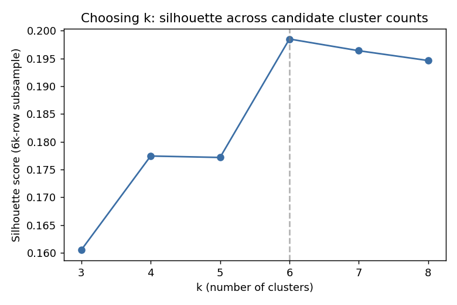
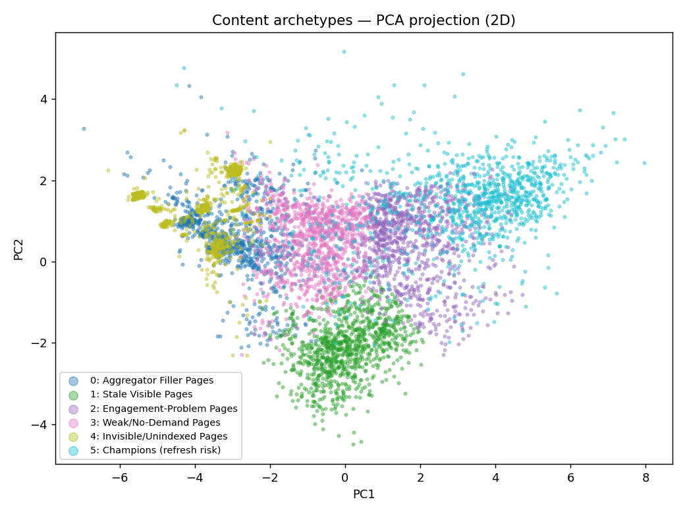
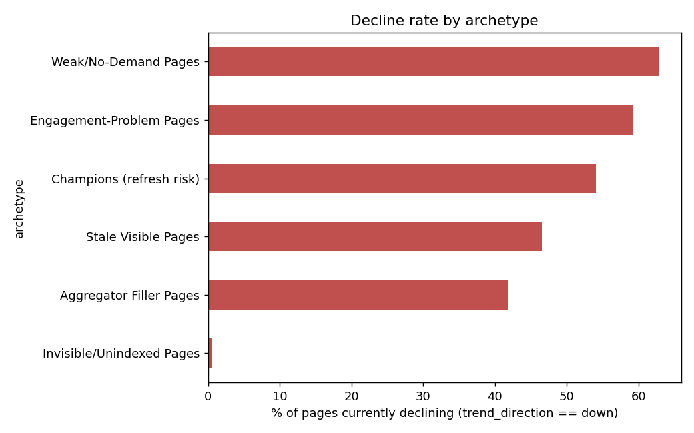

What performance archetypes exist across a real content inventory — and what should an editor actually do about each one, before the next review cycle?
Content teams reviewing hundreds or thousands of pages need a way to triage beyond "everything is a priority." This project clusters 30,000 anonymized FlyRank content pages into six performance archetypes using sixteen safe, current-state metrics — traffic, CTR, engagement, freshness, and content properties — with no article text and no client-identifying data anywhere in the pipeline. A KMeans model (k=6, chosen by silhouette score) produced groups that are moderately separated (silhouette ≈ 0.20) but highly reproducible under re-seeding and bootstrapping (Adjusted Rand Index mostly 0.80–1.00). Profiling each cluster's raw metrics before naming it surfaced six distinct archetypes, from "Champions" carrying the most traffic to "Invisible/Unindexed" pages with almost no search presence at all. The output is a ranked action queue — protect, improve, rewrite, monitor, merge, or prune — with "Engagement-Problem Pages" (26% of the inventory: high traffic, page-one position, but a 0.25% median click-through rate) as the top review priority.
A content team with a large, aging inventory can't manually eyeball every page against sixteen interacting metrics and decide what to do next. Somewhere in that inventory are pages worth protecting, pages worth rewriting, and pages worth quietly pruning — but sorted by publish date or raw traffic alone, those three categories look identical.
This capstone asks: what performance archetypes exist across the content inventory, and what action does each one call for? The output is not a single opaque priority score — it's a small set of named, inspected groups, each mapped to a concrete next step a content editor can take tomorrow: protect, improve, rewrite, merge, prune, or monitor.
A wrong call here is recoverable — a page routed to "monitor" instead of "improve" loses a review cycle, not revenue directly — which is exactly why this output is built as decision support for a human reviewer, not an automated trigger.
This analysis uses the anonymized starter release only — content_refresh_anonymized.csv, 30,000 pages across 32 pseudonymized clients, every metric aggregated over a trailing 90-day window. The full ~79M-row warehouse release was not pulled for this pass.
trend_direction, trend_pct — the data dictionary defines these as the label source for a different (predictive) task; used here only afterward, to describe a cluster's decline mix, never as a clustering input.content_id, client_id — pseudonymous identifiers, used only for counting and grouping, never as features.provider_used, model_used — flagged "not a model feature" in the data dictionary.keyword article rows; search volume, competition, and CPC are missing whenever a page has no keyword context (100% of feedly article rows). Rather than a blind zero-fill — which would silently encode content type into the clustering — each affected metric carries an explicit "had data" indicator alongside a median-imputed value.Sixteen features — log-scaled traffic totals, click-through and engagement rates, average position (with an explicit "has position data" flag, since a position of 0 means no data, not first place), content age, freshness, word count, and search volume — are standardized and fed to KMeans. The number of clusters, k, is chosen from a silhouette-score grid across k=3 to 8, not assumed in advance.

Before trusting any cluster boundary, the fit was re-run with five different random seeds and on five bootstrap resamples of the data, each compared back to the original assignment with Adjusted Rand Index (1.0 = identical grouping, 0.0 = random agreement).
| Check | ARI range | Reading |
|---|---|---|
| Re-seeding (5 seeds) | 0.845 – 0.997 | Same six regions keep reappearing |
| Bootstrap resampling (5 resamples) | 0.798 – 0.990 | Not an artifact of one particular sample |
PCA is used only to project the sixteen-dimensional feature space into two dimensions for visualization — it plays no role in the clustering itself, which runs on the full standardized feature set.
Clustering is unsupervised, so there's no accuracy number to beat — the fair comparison is against the single flat rule an editor already has: "review anything with zero clicks." That rule would flag five of the six archetypes below indiscriminately; it can't distinguish a page with no clicks because of no demand, staleness, lack of indexing, or aggregator filler — which is precisely the distinction the archetypes make.

Named only after reading each cluster's median metrics — never before.
Highest impressions and sessions, longest content, the only cluster with meaningful AI-referral traffic — but the highest median gap since last update (~104 days vs. ~20–25 elsewhere).
Protect + monitor freshnessHigh impressions, page-one position — but a 0.25% median CTR and 1.7% engagement rate relative to that volume. The single largest pool of visible traffic being under-captured.
Improve metadata / CTROldest median content age (~441 days), moderate impressions, page-two position, essentially zero measured clicks or engagement.
Rewrite / refreshThe largest single archetype. Youngest median age, low impressions, near-zero engagement, low search volume behind the target keyword.
Monitor / prune weakest tailDominated by feed-sourced content with zero search volume — no keyword target at all — and negligible traffic despite a decent average position.
Merge or pruneNear-zero impressions, mostly no position data at all — and, tellingly, almost no decline or growth. Already sitting at the floor.
Investigate indexing / prune
git clone https://github.com/muhammadfarhan2157-source/flyrank-ml-internship.git
cd flyrank-ml-internship
pip install -r requirements.txt
jupyter nbconvert --to notebook --execute work/notebooks/capstone.ipynbRandom seed 42 throughout (StandardScaler is deterministic; KMeans and PCA seeded at 42, n_init=10). Committed receipts: work/outputs/action_mapping.json, work/outputs/cluster_profile.json, and every chart in work/notebooks/figures/ — aggregated/derived outputs only, no raw per-row dataset committed.
Full write-up: work/capstone_report.md · Source notebook: work/notebooks/capstone.ipynb
Built on the FlyRank ML Internship dataset.